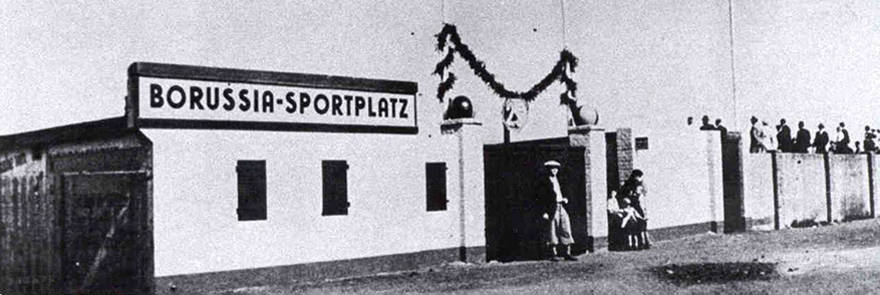

11/8/1924
”Weisse Wiese“ developed
 The council owned ”Weisse Wiese“
ground on the Wambeler Strasse yesterday gained a new name:
”Borussia Sport Park“. The club members have, over many years,
with the investment of some 50000RM, developed the council-owned
ground into a noteworthy 18000 capacity stadium. This initiative
is a one-off in Germany. BVB speaker and honorary president Franz
Jacobi once again hit the nail on the head declaring, ”The 10th of
August 1924 will go down in the annals of the club as a great day.
Many fans came to witness the re-naming ceremony.
Among them were town officials Dr. Ruben and Zwiehoff.
BVB president Dr. Schwaben gave ”our“ Borussia Sport Park his
blessing. “Many of us, like our patron, developer Ignatz Peters,
had tears in our eyes. Only last Wednesday a 60m long part of the
fence surrounding the ground had been blown down during the fierce
wind and rain but by working day and night all had been made good.
I am so proud of my Borussia!“
BVB board member August Busse had to make an awkward appearance in
front of a Dortmund court yesterday. Together with brewery
director and former president Heinz Schwaben he had to give
details regarding the actual financial situation at the club. The
club had allowed itself to run up considerable debts in recent
years. Bankruptcy loomed. The cause? Following the development of
the ”Borussia Sport Park “in 1924, the Schwaben administration
strived to achieve the sporting elite. Insurance policies were
underwritten to the tune of 12000RM which allowed an entirely new
team to be bought which then duly attained promotion into the Ruhr
regional league.
This flew in the face of DFB
statutes. Had this been known at the time the club could easily
have been thrown out of the association. Worse still, the ”bought“
eleven was no real team at all. They played poorly, driving fans
from the ”Borussia Sport Park“ in their droves, with relegation
following and then financial ruin. The 12000RM loan could not be
repaid within the terms of the contract. The board wanted to hide
this fact as the 1927 elections loomed, but failed. The court
ordered that the elections be held again on 7/1/1928. In autumn of
that year the financial scandal became public knowledge leading to
Schwaben and his associates stepping down (although they did
technically stay board members until May of 1929). Displaying no
little honour, Heinz Schwaben repaid the 1200RM loan personally
thus rescuing BVB from total demise.